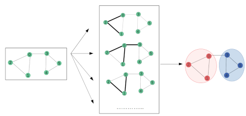
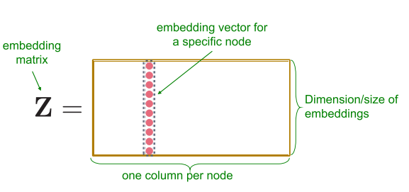
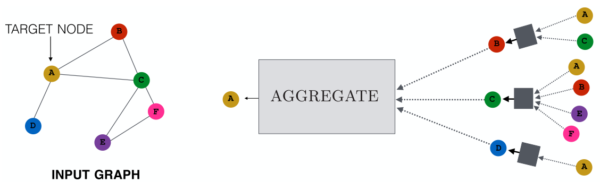
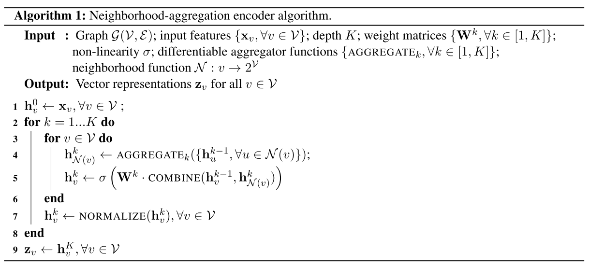
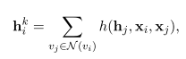

Графовые нейронные сети — молодое и перспективное направление развития нейронных сетей, нашедшее применение в анализе различных структур данных, например, социальных профилей, групп документов, в молекулярной биологии, трехмерных изображений и т.д. и т.п. В данной статье разбираются подходы к решению проблемы работы с графовыми данными.
Главная сложность — разыскать такое представление графа, которое отобразит графовую структуру в модель машинного обучения. Решается это такими методами:
- графовые статистики
- ядерные методы
- манипуляции с признаками для оценки локальной близости
- обучение представлению графа
Представление информации в нодах или субграфах в виде векторов — проблема. Оказывается, как правило, данные содержатся в многомерном неевклидовом пространстве. Соответственно задача — перегнать многомерный вектор признаков в низкоразмерный, размерностью , желательно из .
Одним из основных подходов в решении данной задачи является representation learning. Подход сводится к созданию эмбеддингов для нод или субграфов в графе, что позволяет перевести данные в область с низкой размерностью. Такие эмбеддинги уже можно использовать в различных моделей ML.
Если мы имеем граф и ассоциированные с ним матрицу смежности и матрицу , содержащую атрибуты нод, так что , то задачей является получение векторов для каждой ноды, таких, что . (Данный подход справедлив и для ребер).
Эту задачу решает такая модель:
- функция попарной похожести (pairwise similarity function) , определенная над графом . Функция измеряет схожесть между нодами.
- энкодер, генерирующий эмбеддинги
- декодер, реконструирующий статистики графа из эмбеддингов *
- функция потерь (специфична для каждой задачи) - оценивает несоответствие между декодированным (оцененным) значением близости и истинным
* для двух нод в графе декодер восстанавливает «попарную близость» нод в графе из эмбеддингов
Самый простой метод — shallow encoding, для которого мы можем определить энкодер как функцию: , где .

К подобным способам создания эмбеддингов относятся различные матричные факторизации (graph factorisation, GraRep, HOPE и т.д.) и RandomWalk модели (DeepWalk, node2wec).
Проблемой shallow encoding является то, что в этом методе параметры нод не распространяются и не используются совместно в энкодере. Каждый вектор обучается отдельно от других. Число параметров растет как функция от количества нод . Кроме того, подход не учитывает атрибуты нод, которые в большинстве случаев содержат важную информацию о графе. К тому же подход генерирует эмбеддинги только для данных, которые есть среди обучаемых. Модель проблематично обобщить на данные, которые модель никогда не видела.
Чтобы справиться с недостатками shallow encoding, были изобретены генерализованные энкодер-декодер структуры: DNGR (deep neural graph representation) и SDNE (structural deep network embeddings), относящихся к автоэнкодерам, основанных на исследовании соседних нод в графе.
Прямым решением для таких моделей является то, что каждая нода ассоциируется с высокаразмерным «вектором близости» , содержащем информацию о близости ноды ко всем другим нодам в графе. Затем данный вектор сжимается до нужной размерности. Проблема такого подхода в том, что он невероятно дорогой. К тому же метод статичный и плохо работает с изменяющимися графами.
Другой подход — neighbourhood agregation атрибутов нод для генерации эмбеддингов. Этот метод позволяет агрегировать «месседжи» от соседей ноды, которые, в свою очередь, базируются на «месседжах», агрегированных по соседям соседей и т.д. Иногда такие модели называют сверточными энкодерами из-за схожести их архитектуры со свертками.

Алгоритм такой сети выглядит так (взято из статьи Representation Learning on Graphs: Methods and Applicationsб Hamilton, William L.; Ying, Rex; Leskovec, Jure);

- Алгоритм строит эмбеддинги для нод рекурсивно
- Вначале энкодер инициализируется атрибутами нод
- Затем на каждой итерации агрегируются эмбеддинги соседей
- Далее каждая нода получает новый эмбеддинг, скомбинированный из ее собственного эмбеддинга и агрегированного вектора.
- Затем все это отправляется в полносвязный слой и процесс повторяется K раз.
Эмбеддинг каждой ноды обогащается данными своих соседей, при этом размерность векторов остается постоянной во время всей процедуры. В результате мы получаем векторное представление графа.
Этот подход эксплуатируют:
- GNN (graph neural network)
- GCN (graph convolutional networks)
- column networks
- GraphSAGE
Разные подтипы модели определяются разными агрегирующей функцией и комбинирующей вектора функцией.
GCN
- агрегирующая функция - поэлементное среднее
- комбинируем взвешенной суммой
column network
- то же самое, что и в GCN, только на выходе цикла стоит функция интерполяции, позволяющая сохранять локальную информацию в процессе итерации)
GraphSAGE
- агрегирует среднее, макспуллинг или LSTM
- комбинируем конкатенацией
GNN
GNN — обобщающая вышеизложенные принципы модель. По сути, GNN описывает множество возможных реализаций, одна из которых — GCN, где в качестве основного механизма используется свертка.
В базовой реализации, алгоритм инициализируется случайным эмбеддингом для каждой ноды и на каждой итерации эмбеддинги накапливают информацию о своих соседях вот таким образом:

где — это произвольная дифференцируемая функция вида . На выходе после итераций мы должны получить вектор вида , где - произвольная дифференцируемая функция вида , иными словами, это некая нейросеть, возможно MLP.
Практическую часть к данной статье смотрите тут.